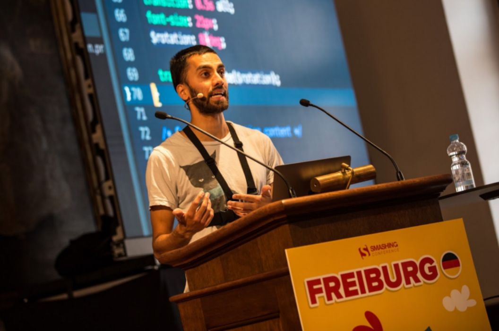

History
TechCon started in 2010 as a small gathering of tech enthusiasts. Over the years, it has grown into a major event attracting thousands of attendees from around the world. The conference has been a platform for unveiling groundbreaking technologies and fostering innovation in the tech industry.

Mission
The mission of TechCon is to bring together technology professionals, enthusiasts, and innovators to share knowledge, inspire creativity, and drive the tech industry forward. We aim to create an inclusive environment where ideas can flourish and collaborations can thrive.
Past Speakers
Jane Doe
Jane Doe, a leading AI researcher, shared insights on the future of artificial intelligence and its potential impact on various industries. Her contributions to the field have been recognized globally.

John Smith
John Smith, CEO of Tech Innovations, discussed the latest trends in technology and innovation. His keynote address highlighted the importance of embracing change and staying ahead in a rapidly evolving industry.